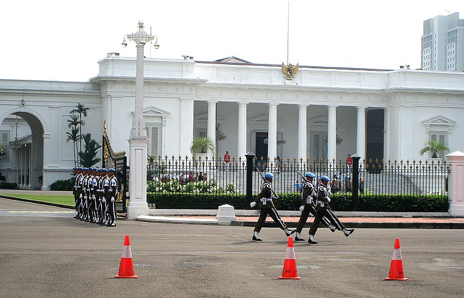
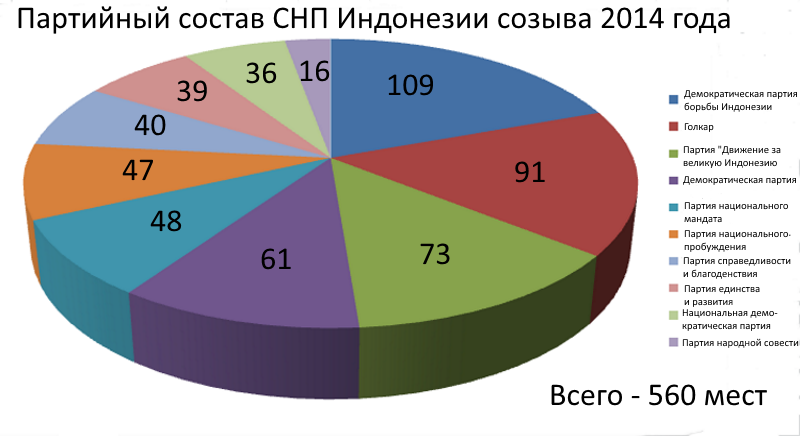
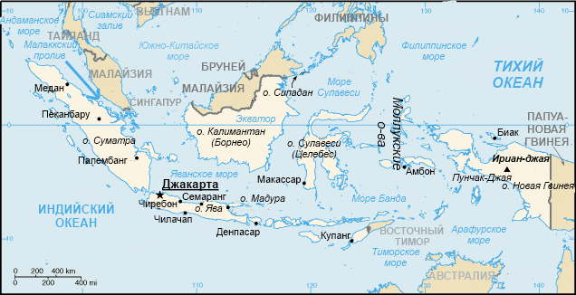
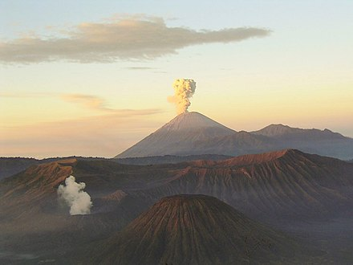
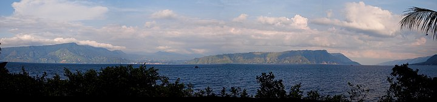
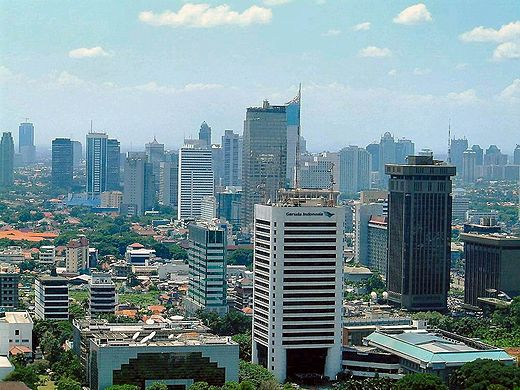
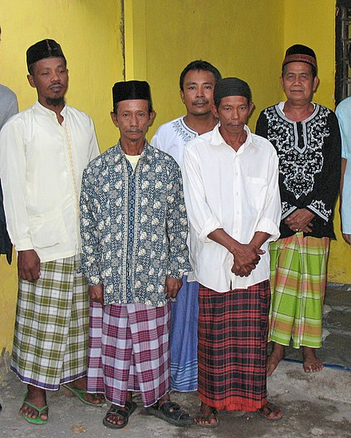

Государство в Юго-Восточной Азии. Население, по официальным итогам переписи 2020 года, составляет 270 203 917 человек[2], территория — 1 919 440 км², по обоим этим показателям является крупнейшей страной региона. Занимает четвёртое место в мире по численности населения. Столица — Джакарта. Реализуется план перенесения столицы в строящийся город Нусантара. Государственный язык — индонезийский.Унитарное государство, президентская республика. По итогам очередных президентских выборов, состоявшихся в апреле 2019 года, Джоко Видодо был переизбран на пост главы государства: его второй президентский срок начался 20 октября 2019 года. Пост вице-президента на предстоящее пятилетие занял Мааруф Амин. Подразделяется на 37 административно-территориальные единиц, 35 из которых являются провинциями и 2 — особыми округами, приравненными по статусу к провинциям.Расположена на островах Малайского архипелага и западной части острова Новая Гвинея. Омывается водами Тихого и Индийского океанов. Является крупнейшим островным государством в мире. Значительная часть островов относится к Зондским, которые в свою очередь подразделяются на Большие Зондские и Малые Зондские острова. Имеет сухопутную границу с Малайзией (на острове Калимантан), Папуа — Новой Гвинеей (на острове Новая Гвинея) и Восточным Тимором (на острове Тимор).Отличается значительным этнокультурным разнообразием. Около 88 % населения исповедует ислам, что делает Индонезию страной с самым большим мусульманским населением в мире. Аграрно-индустриальная страна с динамично развивающейся экономикой. Объём ВВП по паритету покупательной способности за 2017 год составил 3,242 триллиона долларов США (около 12 378 долларов США на душу населения). Денежная единица — индонезийская рупия. Независимость страны провозглашена 17 августа 1945 года. В 1942—1945 годах она находилась под японской оккупацией, а до того была колониальным владением Нидерландов, которые начали её освоение в первой половине XVII века и объединили бо́льшую часть территории современной Индонезии под своей властью к началу XX века.
Индонезия — унитарная республика президентского типа. Основным законом государства является конституция, принятая в 1945 году. Конституция 1945 года отменялась в 1950 году, была восстановлена в 1959 году и в настоящее время действует с рядом поправок, основные из которых были приняты в 1998, 1999 и 2001 годах. Данные поправки, носившие либерально-демократический характер, получили значительный международный резонанс. В частности, международной правозащитной организации «Freedom House» они дали основание классифицировать Индонезию в качестве «свободной страны». Основные институты индонезийской государственности были сформированы в первые годы независимого развития страны. Вместе с тем, правовые нормы их функционирования претерпели значительные изменения в ходе либерально-демократических преобразований конца 1990-х — начала 2000-х годов. Эти изменения осуществлялись как путём внесения упомянутых поправок в конституцию, так через принятие пакета правовых актов, известных в Индонезии как «Политические законы» (индон. Undang-Undang Politik). Основными итогами реформ стали отход вооружённых сил от политической деятельности, введение в стране реальной многопартийности и прямых президентских выборов, повышение роли законодательных органов власти.
Главой государства и руководителем исполнительной ветви власти является президент, в настоящее время — Джоко Видодо. В исполнении обязанностей главы государства президенту оказывает содействие вице-президент — в настоящее время Мааруф Амин. Вице-президент занимает пост президента в случае смерти или отставки последнего. Президент и вице-президент избираются сроком на пять лет тайным голосованием на всеобщих прямых выборах, один и тот же человек не может занимать президентский пост более двух сроков подряд. Конституционные нормы, предусматривающие прямое всенародное избрание президента и ограничивающие его срок пребывания у власти, введены в 2001 году, ранее глава государства избирался раз в пять лет в ходе сессии Народного консультативного конгресса и мог переизбираться на этот пост неограниченное число раз. Президент формирует и возглавляет правительство. В правительство входят министры-координаторы (курируют по несколько министерств и ведомств), министры (возглавляют министерства), государственные министры (возглавляют различные ведомства, либо курируют различные государственные программы, либо выполняют особые поручения), государственный секретарь (глава президентской администрации) и главы ведомств, не имеющие министерской должности, но официально приравниваемые к министрам по статусу. Количественный состав и структура правительства не регламентированы законодательно и определяются президентом.
Высшим органом законодательной власти является Народный консультативный конгресс, НКК. НКК, не являющийся постоянно действующей структурой, созывается на сессии не реже, чем раз в пять лет, и состоит из двух палат: Совета народных представителей, СНП и Совета представителей регионов, СПР. На своих регулярных сессиях НКК проводит инаугурацию избранных президента и вице-президента и утверждает предложенные президентом основные направления государственного курса на пятилетний срок. Президент несёт ответственность перед НКК, конгресс может объявить ему импичмент, собравшись для этого на внеочередную сессию. Количественный состав НКК формально не регламентируется и определяется составом входящих в него СНП и СПР. В составе НКК последнего созыва, приведённого к присяге в октябре 2014 года, 692 депутата. Председатель НКК — Зулкифли Хасан, представитель Партии национального мандата. В перерывах между сессиями НКК текущие законодательные функции выполняет Совет народных представителей, фактически представляющий собой постоянно действующий однопалатный парламент. В компетенцию СНП входят разработка, принятие и контроль за исполнением законов, утверждение государственного бюджета, ратификация части международных соглашений. Депутаты СНП избираются на пятилетний срок в ходе прямых всеобщих парламентских выборов, проводимых по пропорциональной системе в многомандатных округах. Количественный состав Совета, регламентируемый действующим законодательством, многократно варьировался за годы существования этого органа. В нынешнем составе СНП, сформированном по итогам парламентских выборов 2014 года и приведённом к присяге в октябре 2014 года, 560 человек. Депутатами 10 прошедших в парламент партий сформировано 10 фракций. Председатель СНП — Сетья Нованто
Административное деление Индонезии регламентируется конституцией и действующим законодательством. Основным правовым актом в этой области является Закон № 32 2004 года о местном самоуправлении. Кроме того, статус каждого из особых округов и провинций, имеющих особое положение, регулируется отдельными законами. Индонезия подразделяется на 37 административно-территориальных единиц первого уровня, в числе которых 35 провинций и две особые административные единицы, приравниваемые по статусу к провинции, — особый столичный округ Джакарта и особый округ Джокьякарта. Во главе каждой провинции и каждого особого округа стоит губернатор (индон. gubernur), избираемый населением сроком на 5 лет (до 2005 года избирался местным органом законодательной власти). Высшими органами законодательной власти в провинциях и особых округах являются местные советы народных представителей, избираемые населением также сроком на пять лет. Провинцией Индонезии в 1969 году была объявлена западная часть острова Новая Гвинея, занятая по итогам конфликта с Нидерландами 1961—1962 годов (названия — «Западный Ириан» в 1969—1973 годах, «Ириан Джая» в 1973—2002 годах). Статус провинции имел также оккупированный Индонезией в 1975 году Восточный Тимор — до отделения этой территории от Индонезии в 1999 году. Резкое обострение этноконфессиональных противоречий и рост сепаратистских настроений в ряде регионов в контексте политического и социально-экономического кризиса конца 1990-х годов подвигли власти Индонезии к принятию комплекса мер по децентрализации государственной власти и разукрупнению административно-территориального деления страны. В период с 1999 по 2007 год было создано пять новых провинций — Папуа, Западное Папуа, Бантен, Архипелаг Риау, Горонтало. Кроме того, статус провинции был предоставлен Ачеху, являвшемуся до этого особым округом. В 2012 году была создана провинция Северный Калимантан. В 2022 году был предпринят очередной шаг по разукрупнению административных единиц индонезийской части Новой Гвинеи: за счёт территорий двух существовавших там провинций были созданы ещё три: Центральное Папуа, Папуа Пегунунган и Южное Папуа. Все пять провинций, расположенных на территории Новой Гвинеи, а также Ачех, занимающий северо-западную оконечность Суматры, имеют особый статус, который подразумевает наделение властей этих регионов некоторыми дополнительными полномочиями в социальной, культурной, духовной и других сферах. В Ачехе, в частности, наряду с национальным законодательством Индонезии действуют (с ограничениями) законы шариата. Провинции и особые округа делятся на округа (кабупа́тены, индон. kabupaten) и приравненные к округам муниципалитеты (ко́ты, индон. kota), в которые выделяются крупные города. По состоянию на начало 2020 года в стране насчитывалось 416 округов и 98 муниципалитетов. Округа управляются регентами (бупа́ти, индон. bupati), муниципалитеты — мэрами (валико́та, индон. walikota). Полномочия регентов и мэров идентичны, и те, и другие избираются населением на пять лет. Высшими органами законодательной власти округов и муниципалитетов являются местные советы народных представителей, также избираемые населением на пять лет[134]. Столичный округ Джакарта имеет особое административное устройство: он подразделяется на пять городских административных округов (индон. kota administrasi) и один административный округ (индон. kabupaten administrasi). Эти административные единицы имеют несколько меньшую степень самоуправления, чем обычные городские муниципалитеты и округа, их мэры и, соответственно, регент назначаются губернатором Джакарты. Округа и муниципалитеты подразделяются на районы (кечаматаны, индон. kecamatan), управляемые руководителями (чама́тами, индон. camat), назначаемыми регентом или мэром. В округах также имеются органы законодательной власти — советы народных представителей[134]. В провинциях Папуа и Западное Папуа округ имеет название ди́стрик (индон. distrik), его руководитель — глава дистрика (кепа́ла дистрик, индон. kepala distrik). Районы подразделяются на самые низовые административно-территориальные единицы двух типов: деревни (на большей части территории имеют название де́са (индон. desa), в некоторых регионах законодательно закреплены местные названия) и поселения — келура́ханы (индон. kelurahan). Деревни пользуются большим самоуправлением, чем поселения, их главы, в большинстве мест называемые кепа́ла деса (индон. kepala desa), избираются местным населением в отличие от руководителей поселений — лу́рахов (индон. lurah), назначаемых главами районов.
Территория Индонезии составляет 1 919 440 км² (14-е место по площади среди стран мира и первое среди стран Юго-Восточной Азии). Расположенная по обеим сторонам экватора на островах Малайского архипелага и западной части острова Новая Гвинея и омываемая водами Тихого и Индийского океанов, она является крупнейшим островным государством мира. В состав страны входит не менее 17 508 островов, из которых около 6000 обитаемы, площадь подконтрольной морской акватории (внутреннее море, территориальные и архипелажные воды, исключительная экономическая зона) составляет 7,9 млн км². Значительная часть островов относится к Зондским, которые в свою очередь подразделяются на Большие Зондские и Малые Зондские острова. К Большим Зондским относятся самые крупные острова Индонезии — Ява, Суматра, Сулавеси и Калимантан (на последнем, помимо индонезийской территории, находятся часть территории Малайзии и государство Бруней-Даруссалам). Индонезия имеет сухопутную границу с Малайзией (на острове Калимантан), Папуа-Новой Гвинеей (на острове Новая Гвинея) и Восточным Тимором (на острове Тимор). При этом граница с последним имеется на двух различных участках: с основной территорией этой страны в центральной части острова Тимор и с восточнотиморским эксклавом Окуси-Амбено, окружённым территорией индонезийской провинции Восточные Малые Зондские острова. Морские границы имеются с упомянутыми странами, а также с Сингапуром, Филиппинами, Австралией и Индией.
Бо́льшая часть индонезийской территории представляет собой области кайнозойской складчатости, лишь некоторые регионы являются в геологическом плане более древними — север Суматры и юго-запад Калимантана относятся к области мезозойской складчатости, юго-запад острова Новая Гвинея и отдельные близлежащие острова — к области домезозойской складчатости. В строении преобладают метаморфические породы, палеозойские, мезозойские и палеоген-неогеновые эффузивно-осадочные отложения различного состава. Характерными элементами геологической структуры являются протяжённые островные дуги и сопряжённые с ними глубоководные океанические желоба. Практически вся территория является частью так называемого «Тихоокеанского огненного кольца», что обуславливает высокую степень тектонической активности. В различных районах страны периодически происходят землетрясения, зачастую весьма сильные. Самым разрушительным за исторический период было землетрясение, произошедшее 26 декабря 2004 года у западного побережья Суматры, когда в результате подземных толчков и, главным образом, вызванных ими цунами на различных островах Индонезии погибло, по разным оценкам, от 130 до 170 тысяч человек. Кроме того, на территории страны имеется около 150 действующих вулканов, наиболее крупными из которых являются Мерапи, Бромо, Салак, Семеру (остров Ява), Кракатау (Зондский пролив), Тамбора (остров Сумбава). Мощнейшее извержение за исторический период развития Индонезии — и одно из мощнейших в мировой истории вообще — произвёл в 1883 году Кракатау: в результате извержения и вызванного им цунами на Яве, Суматре и небольших островах Яванского моря погибло не менее 36 тысяч человек, было разрушено почти 300 населённых пунктов
Внутренние районы всех крупных островов являются гористыми: для Явы и Суматры характерны прямолинейные сплошные горные хребты практически по всей длине острова, для Сулавеси и индонезийских территорий Калимантана и Новой Гвинеи — более сложные конфигурации горных систем. Самая высокая вершина Индонезии (она же — самая высокая вершина Океании) — гора Пунчак-Джая (4884 м), расположенная в западной части Новой Гвинеи. Наибольшие по площади равнинные территории имеются на Калимантане
По итогам общенациональной переписи, проведённой в 2020 году, население Индонезии составило 270 203 917 человек. Индонезия, таким образом, является наиболее населённой страной Юго-Восточной Азии и занимает четвёртое место в мире по количеству жителей. Средняя плотность населения на 2020 год составляет около 141 человека на км², при этом население распределено крайне неравномерно: 56,1 % индонезийцев проживает на Яве, которая составляет менее 7 % территории, в результате чего этот остров является одним из самых густонаселённых мест планеты (более 1000 человек на км²). Среди административно-территориальных единиц наибольшая плотность населения зарегистрирована в Особом столичном округе — 15 947 человек на км², наименьшая — в провинции Северный Калимантан — менее 8 человек на км². Для обеспечения более равномерного распределения населения по территории страны власти Индонезии с 1950-х осуществляют масштабную программу трансмиграций — переселения жителей густонаселённых районов (Явы, Мадуры, Бали) на малонаселённые острова (Калимантан, Новая Гвинея, Молукки). В рамках данной программы к началу 2000-х годов было переселено не менее 5,5 миллионов человек, из которых почти половина — в 1970-е — 1980-е годы. Доля городского населения составляет 44 %. По состоянию на 2010 год 11 городов имеют население численностью более 1 миллиона человек, крупнейший из них — столица страны Джакарта с населением 9 607 787 человек.
В Индонезии проживает около 300 народов, большая часть которых относится к австронезийской группе. Австронезийскими, в частности, являются наиболее многочисленные народы страны — яванцы (по состоянию на начало XXI века составляют более 40 % населения), сунданцы (около 15 %), мадурцы (около 4 %), минангкабау (около 3 %), бугисы (около 2,5 %). Наряду с этим в восточных районах, в частности, на Новой Гвинее и прилегающих к ней островах, проживают народности, принадлежащие к меланезийской группе, большая часть из которых относится к папуасам[162]. Бо́льшая часть коренных народов Индонезии проживает в районах их исторического расселения, однако по мере возрастания миграционной динамики увеличивается доля проживающих в нетрадиционных районах. Наиболее заметен этот процесс в отношении яванцев: занимая, в силу своей многочисленности, лидирующие позиции в большинстве сфер жизни страны и наиболее активно участвуя в программе трансмиграций (подробнее см. подраздел «Численность, расселение»), они в значительном количестве проживают во всех регионах страны. Среди некоренных народов Индонезии наиболее многочисленными являются китайцы, проживающие практически во всех регионах страны, преимущественно в крупных городах: их численность, по различным оценкам, колеблется от 2,5 до 7 миллионов человек. Точное определение количества индонезийских китайцев представляется проблематичным в силу особого положения, которое они длительное время занимали в жизни страны: начав активно расселяться в Индонезии с XVI века, они традиционно контролировали значительную часть экономики, что сказывалось на отношениях с коренным населением. Социокультурные противоречия с местными жителями в сочетании с жёсткой дискриминацией, которой подвергались китайцы в период президентства Сухарто (включая полный запрет на использование родного языка), привели к отказу многих из них от изначальной этнической самоидентификации, по крайней мере, на публичном уровне. В различных регионах страны, в основном в крупных городах также проживают значительные общины выходцев из Индии и арабских стран, а также незначительное количество людей европейского и смешанного европейско-индонезийского происхождения.
